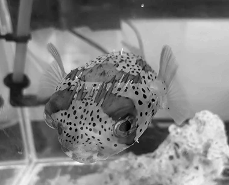
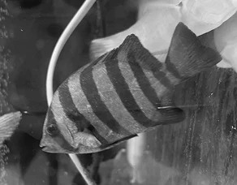
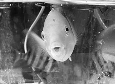
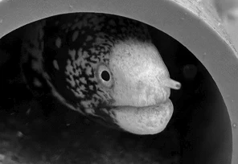

魚類班紹介
中学三年 朝倉 颯希
1.120cm水槽
1アカハタ
採集場所:八丈島
食べるもの:クリル(乾燥オキアミ)
すぐ隠れてしまうので見えにくい
2ナンヨウツバメウオ
採集場所:八丈島
食べるもの:クリル(ほぼなんでも食べる)
人懐っこく、目立つので簡単に見られる
➂その他(カサゴ、ダイナンギンポなど)
採集場所:観音崎、八丈島など
基本岩の中にいるので見えにくい
2.新90cm水槽
1ハリセンボン
採集場所:八丈島
食べるもの:クリル
人懐っこいので指を追ってきてくれる
(食べようとしてるだけかもしれない)
2その他(ハタ、コショウダイの仲間)

3.旧90cm水槽
1イシダイ
採集場所:下田
食べるもの:プロフード(魚用の感想餌)
明るい時と暗い時で色がかなり変わる

2その他(ヤマブキベラ、キヌバリなど)
採集場所:八丈島、小田原など

3.ウツボ水槽
1ウツボの仲間
採集場所:八丈島
食べるもの:クリル
たまに穴から顔を出してくる

2その他(ハコフグ)
4.その他
1葛西水槽(ハゼ、カゴカキダイなど)
採集場所:葛西臨海公園
2淡水水槽(タナゴの仲間、アブラハヤ、ヨシノボリなど)